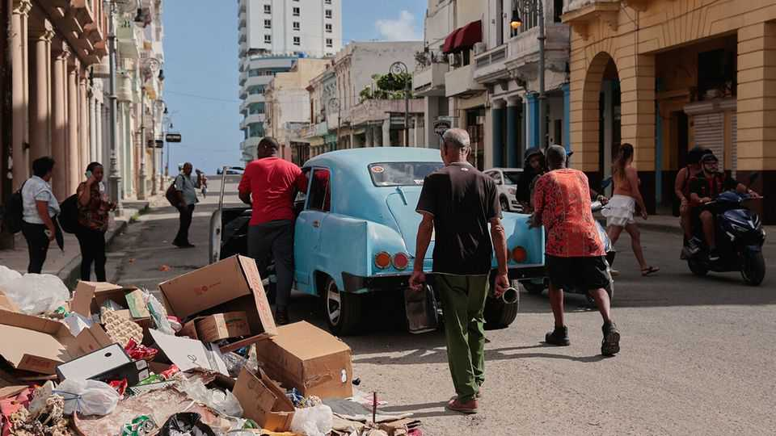

Promised reforms could change Cuba radically
But only if they actually go ahead
July 2nd 2026

CUBA’S RULING Communist Party first cracked open the door to private business in the 1990s, when it lost the Soviet Union as its patron. Starting in the 2010s it went further, pushed first by the global financial crisis and then by the covid-19 pandemic. Will Donald Trump, whose measures have plunged the country into unprecedented hardship, achieve the next and most drastic economic change?
In an emergency session on June 18th Cuba’s National Assembly approved a package of 176 reforms. It is the most radical attempt to overhaul the economy since the revolution in 1959. On paper the measures push the country towards a market economy, while preserving the state’s control. Cuba is going to implement “market socialism, Cuban-style,” says Juan Triana Barros of the University of Havana. Not everyone is sure about that.
Fully implemented, the reforms would shrink the areas of the economy from which private businesses are banned, enable them to import and export more freely, and let them attract foreign investment. For the first time entrepreneurs would be permitted to hire more than 100 employees and own multiple firms.
The reforms would also shake up state-owned enterprises. They could be sold or made into commercial ventures with shares and equity stakes—and the possibility of bankruptcy. They could set their own prices. In theory financing for private and public firms would get easier. Private banks would be allowed and the foreign-exchange market opened to more players.
Some services that were once the pride of the state, such as nursing homes and soup kitchens, will in theory go private. Blanket subsidies provided through the Cuban ration book are to be replaced with direct support for “vulnerable individuals”. The president, Miguel Díaz Canel, said the accumulation of wealth in private hands would no longer be forbidden. “If there is no wealth, there is nothing to distribute,” he said.
Such changes are sorely needed. Decades of mismanagement and America’s embargo have hammered the island. Measures enacted since January by Mr Trump and Marco Rubio, his Cuban-American secretary of state, are pushing Cuba to the brink. America has put sanctions not just on Gaesa, the military conglomerate, but any Cuban or foreign business working with it. They have blocked off fuel.
The economy has shrunk by over 20% since 2020. A dollar now buys over 600 pesos on the informal market, making the minimum monthly wage worth only around $5. Officially, inflation hit nearly 16% year-on-year in May; the real rate is certainly higher. Tourism was down by 58% in the first five months of the year. Blackouts last around 22 hours a day even in central Havana; when power comes on, Cubans rush to do what they can while it lasts. Water runs every other day. “It is utterly exhausting,” says a father of two.
Yet the government’s announcements have been met with little enthusiasm—at home or abroad. For one thing, the promised reforms fall short of the huge changes that once shook up China’s and Vietnam’s hidebound economies. Moreover, many doubt the promises will become reality, or at least not at the speed required. An official at the US State Department dismissed the proposals as “superficial smoke signals”. The government has promised change many times before, only to later drag its feet. It is a “circus”, says a former translator in Havana.
Even a deeply committed government would find implementing the reform plan tricky. Cuba lacks foreign currency, rule of law and institutional capacity. American sanctions make it almost impossible for Cuba to get foreign capital. Even if America’s government issued a licence tomorrow for everyone to operate in Cuba, firms could be sued for dealing in expropriated property, says Yosbel Ibarra of Greenberg Traurig, a law firm in Miami.
Cubans fear any reforms will primarily benefit regime insiders and the already rich. Without a proper social safety-net—including reviving the island’s once decent systems of education and health care—ordinary people might struggle to withstand the hyperinflation that market reforms may bring. The gap between Cuba’s haves and have-nots is already plain. On a Saturday afternoon, the pool at the Meliá Habana hotel is packed with people sipping cocktails as their children swim around. The $15 entry fee is far beyond most Cubans. BMWs are parked outside fancy restaurants where steaks cost $100.
For the moment there is little sign that political change will follow an economic opening. Political prisoners are not being released, despite American requests. On June 20th Manuel Cuesta Morua, a moderate opposition figure, was seized, roughed up and threatened with being shot, all for supporting a pot-banging protest (these now happen nightly). Mr Trump and Mr Rubio also want Cuba to reduce its security ties with China, Russia and Iran.
Mr Trump reckons he can pile more pressure on Cuba before cutting a deal. On June 23rd the State Department put sanctions on more Gaesa-linked bodies, including AUSA, which ran container traffic at Mariel port. Days later Gaesa sold it to another state-owned company so that supplies may again reach the island.
If Cuba’s rulers move fast, the reforms may buy the island some breathing room. “This is a lot,” says Paolo Spadoni of Augusta University. “But it is not enough.” Mr Trump is betting that more pain will force deeper change; the regime is betting it can please or outlast him. Ordinary Cubans worry that, either way, they will lose out. ■
Correction (July 2nd 2026): It was the president, Miguel Díaz Canel—and not the prime minister, Manuel Marrero—who said that the accumulation of wealth in private hands would no longer be forbidden.
Sign up to El Boletín, our subscriber-only newsletter on Latin America, to understand the forces shaping a fascinating and complex region.